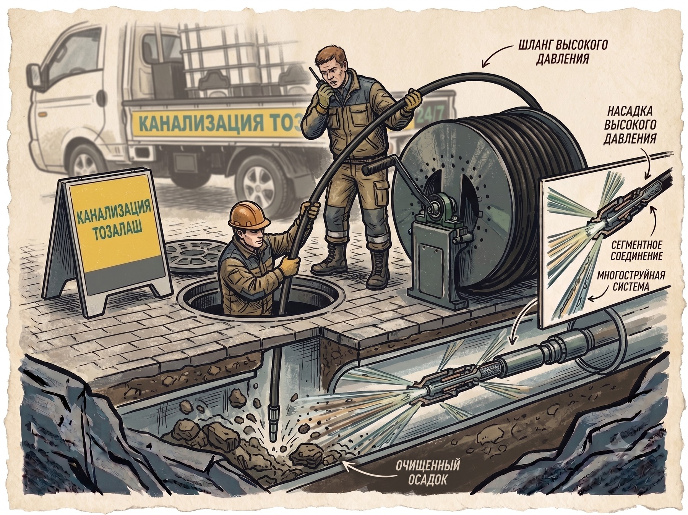
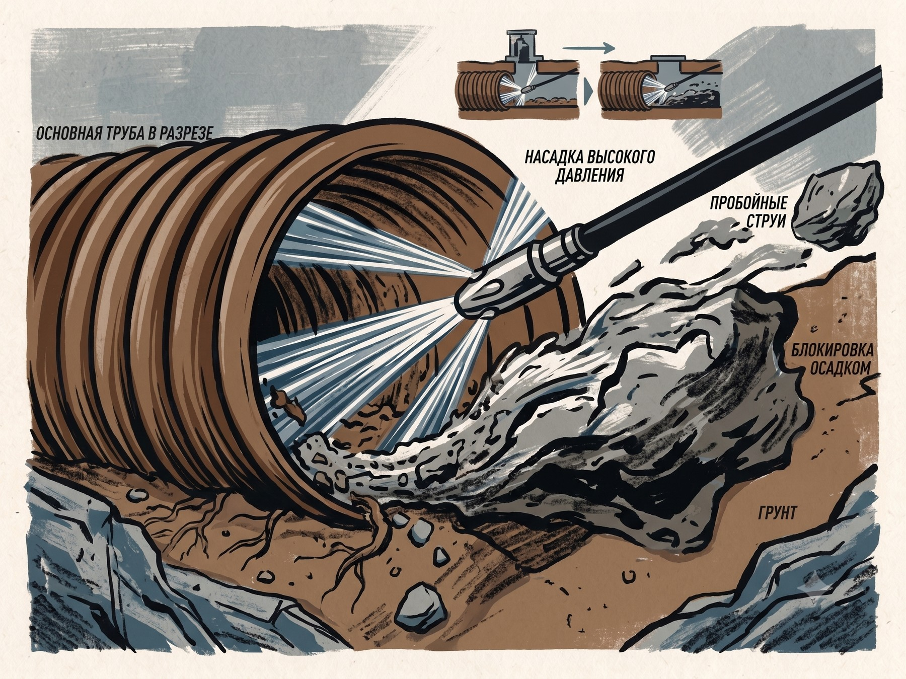
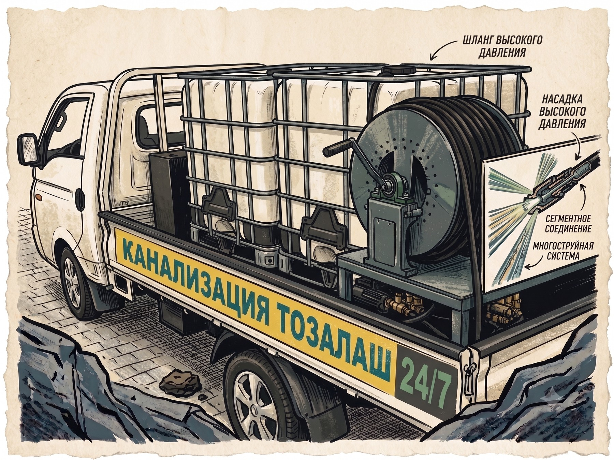

Работаем круглосуточно, включая ночь, выходные и праздники.

Вода ушла — ещё не значит, что труба чистая. Если в пробке просто продавили отверстие, а жир и ил остались на стенках, засор соберётся заново — обычно за две-три недели. Мы работаем до чистой стенки, поэтому и не возвращаемся к вам по второму разу.

Тросом продавили узкий канал — вода побежала, мастер уехал. Стенки по-прежнему заросшие, рабочий диаметр трубы почти не восстановлен.
Снимаем отложения по всей длине участка и вымываем их в колодец. Если есть сомнения — показываем результат камерой, чтобы вы увидели трубу изнутри сами.
Тряпка в стояке, жир в кафе, песок в наружной линии и корни в трубе частного дома — это четыре разные задачи, и одним тросом они не решаются. Мы возим весь набор сразу, чтобы не приезжать второй раз «уже с нужной машиной».

Насос высокого давления гонит воду до 200 бар. Именно она снимает со стенок жир и ил — то, что трос просто проткнёт насквозь.
Оборудование можно купить. Понимать, что происходит внутри чужой трубы, и не сделать хуже — нет. У наших мастеров это основная профессия, а не подработка по объявлению.
Мастер выясняет, где именно стоит вода, как быстро уходит и что было до вызова. По этим признакам уже понятно, тряпка это в отводе или заросшая наружная линия — и какой машиной её брать.
Старый чугун в центре, пластик в новостройках Сергели, наружные линии частного сектора и общие колодцы — везде свои типовые места засоров. Опыт по Ташкенту здесь важнее мощности насоса.
Не «вода пошла — до свидания». Мастер проверяет, что участок принимает полный поток, и промывает трубу по всей длине. Если нужно — показывает камерой, что внутри чисто.
Плёнка на пол, работа через существующие ревизии, без вскрытия стен и плитки. Уборка за собой — часть работы, а не одолжение.
Никаких «мастер приедет и сориентирует по цене».
Спросим район и что именно происходит: где стоит вода, как давно, квартира или частный дом. Занимает минуту.
Называем сумму и время подачи ближайшей бригады. Если по описанию непонятно — выезд и осмотр бесплатны.
Мастер определяет характер засора, подбирает оборудование и прочищает участок целиком, а не до первого протока.
Платите, когда вода ушла: наличные, Click, Payme, перечисление для юрлиц. С гарантией на выполненные работы.
Ориентировочная стоимость частых работ. Точную сумму диспетчер называет по телефону — она зависит от длины участка и того, чем именно забита труба.
Мы не гоняем одну машину через весь Ташкент. Выберите свой район — увидите, за сколько к вам доедут и с какой техникой.
У каждого типа объекта свои типовые засоры — и своя техника под них.
Раковина, ванна, унитаз, общий стояк. Работаем и с соседями, если пробка общая.
Септики, выгребные ямы, наружные линии от дома до колодца. Илосос и промывка.
Жироуловители и жир в трубах — самая частая причина. Промывка под давлением, обслуживание по графику.
Склады, цеха, офисы, ТСЖ. Договор, регламентное обслуживание, закрывающие документы.
«Позвонила ночью, мастер был через полчаса. Прочистил стояк и показал камерой, что причина у соседей сверху. Ничего не ломали, убрали за собой.»
«У нас кафе, каждый месяц вставал жироуловитель. Промыли под давлением, взяли на обслуживание — с тех пор ни одной остановки в зале.»
«Частный дом в Сергели, яма переполнилась в воскресенье. Приехали в тот же день, откачали, заодно промыли трубу до колодца. Цена совпала с той, что назвали по телефону.»
Тем, что мы восстанавливаем рабочий диаметр трубы, а не пробиваем в пробке отверстие. После «пробили и уехали» засор обычно возвращается за две-три недели, и вы платите второй раз. Мы снимаем отложения со стенок по всей длине участка, а при необходимости показываем результат камерой.
Работаем круглосуточно, включая ночь, выходные и праздники. В центральных районах бригада обычно доезжает за 15–25 минут, на окраинах и в области — дольше. Точное время диспетчер называет сразу, исходя из того, где сейчас ближайшая свободная машина.
Ориентир по цене вы получаете по телефону, до выезда. Платите после того, как работа сделана: наличными, через Click или Payme, юрлицам — по перечислению с закрывающими документами.
В подавляющем большинстве случаев нет. Трос и гидродинамика работают через существующие ревизии, унитаз или стояк. Если разбор всё-таки необходим, мы предупреждаем заранее и согласовываем с вами.
На выполненные работы даётся гарантия. Если засор возвращается регулярно, дело обычно в состоянии самой трубы — просадка, трещина, корни. В этом случае мы предлагаем телеинспекцию, чтобы увидеть причину, а не гонять трос по кругу.
Ҳа, албатта. Диспетчерлар ва усталар ўзбек ва рус тилларида гаплашади — ўзингизга қулай тилда қўнғироқ қилаверинг.
Диспетчер на линии круглосуточно. Скажите район и что случилось — назовём цену и время подачи в первую минуту разговора.